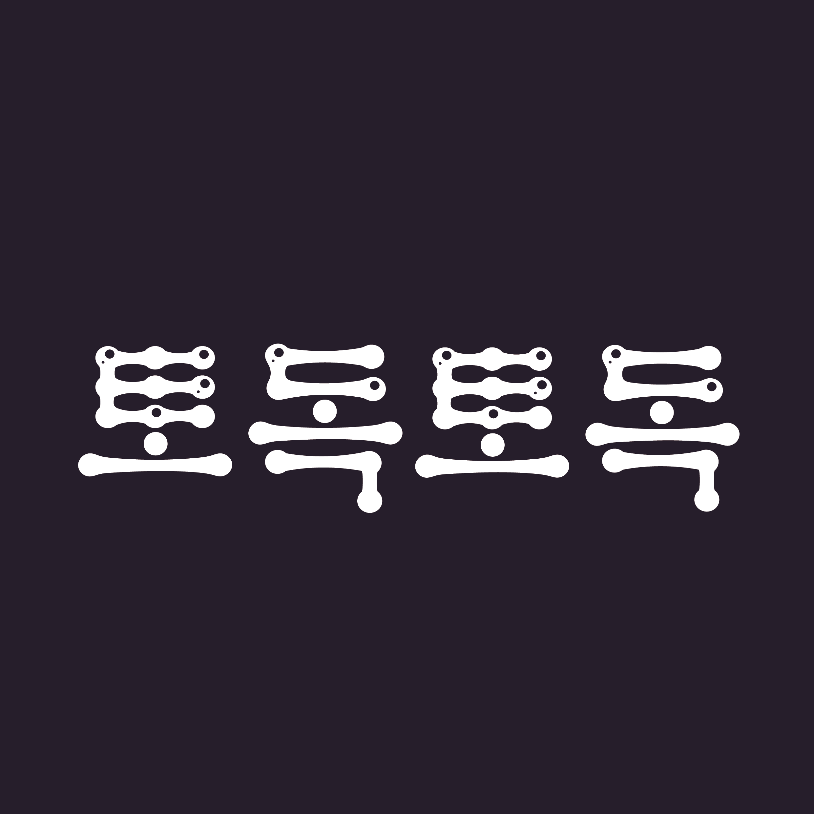
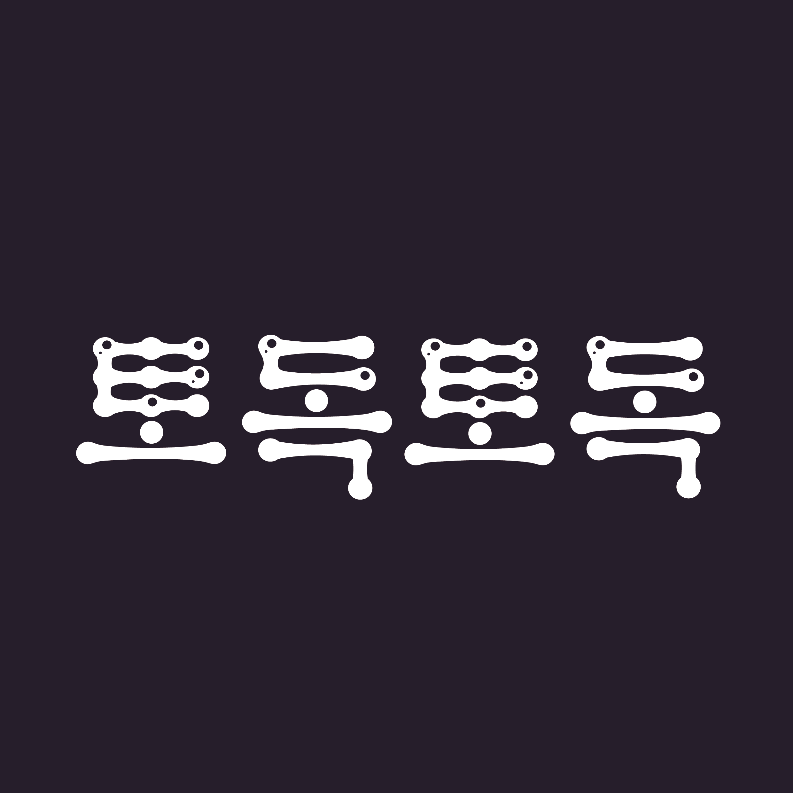
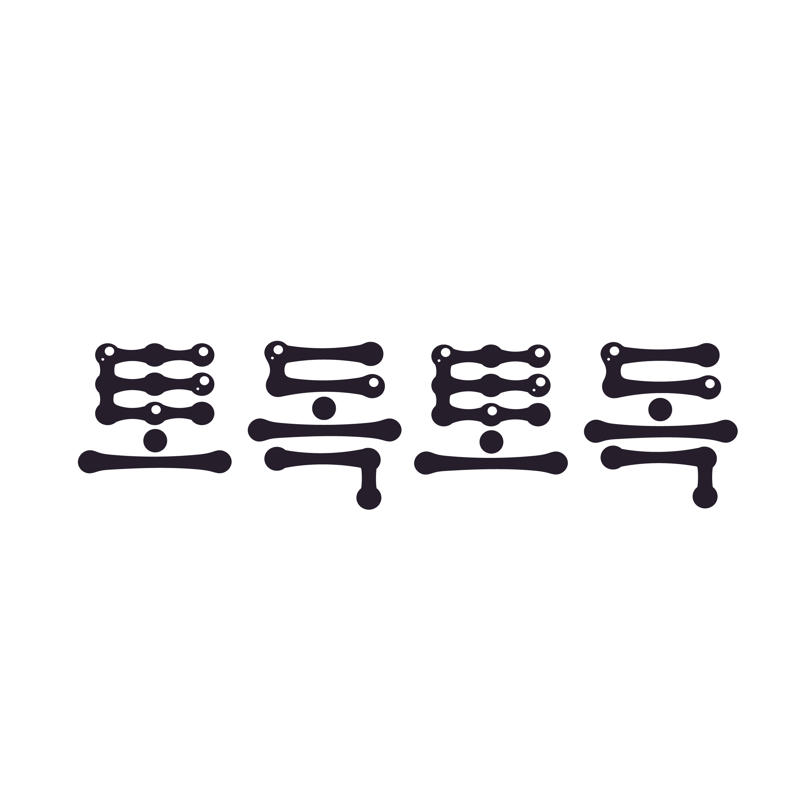
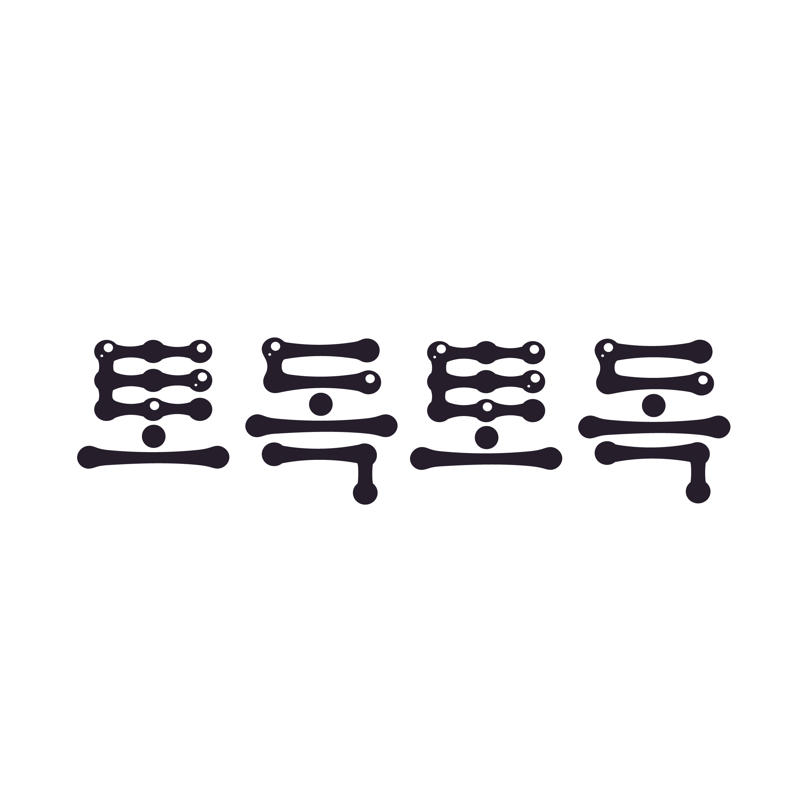

2023
[한글날 의성어 레터링]
한글날을 맞아 의성어들을 레터링한 프로젝트입니다.
선택한 의성어는 ‘토독토독’이었으며
물방울이 토독토독 떨어지는 듯한 형태를 보여주기 위해
모든 자음, 모음에 원형이 보일 수 있도록 했습니다.
자음 내에 작은 원형들을 뚫고 방울들이 터지는 듯한 느낌을 주어
시각적으로 토도토독한 느낌을 극대화하고자 했습니다.
단청의 군청색을 배경색으로 활용하여 레터링의 선명도를 높이고
밤하늘에 빗방울이 떨어지는 듯한 느낌을 주려고 했습니다.
 

 


round shapes｡( `◟ 、) ｡
todock｡･:*todock:･ﾟ★